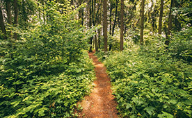

About Coco Peat...
Coco peat is a multi purpose growing medium that is very easy to use. Its high air filled porosity and high water holding capacity makes it the ideal medium for all plant growing applications. Coco peat compressed briquettes and bales. Moreover, Coco peat is an excellent substrate for vegetable, fruit and cut flower crops. It has many applications as an effective soil conditioner and soil-free substrate.
Coco peat has innumerable advantages in the agricultural and domestic gardening. Some of them are in potting mix, horticulture cultivation, nursery beds for seedlings, in gardens to conserve water, orchids, mushroom cultivation, plantation crops etc. The main advantage is that the valuable nitrogen is preserved in coco peat and moisture content is retained mainly in potting mix in home gardening.
Following are some facts about coco peat;
- Coco peat can be used in seed starting mixes, bedding plants, planters, soil mixes, gardens, container plants. Anywhere you would use peat moss. The properties of Coco Peat make it resistant to bacterial and fungal growth.
- Coco Peat holds water rather than shedding it like traditional peat does! It holds 8-9 times its weight in water.
- Coco Peat has the ability to store and release nutrient to plants for extended periods of time. It also has great oxygenation properties which is important for healthy root development.
- It has a pH of 5.0-6.8 which is neutral to slightly acidic. This makes it great for alkaline garden soils.
- Easy to use! Just put your compressed Coco Peat brick in a container, add 4 quarts of warm water and let it sit until the water is absorbed, fluff it up and you are ready to use Coco Peat!
- Coco Peat can even be reused for up to 4 years!
- Vermiculture: Coco peat makes a great bedding material for worm bins! It's actually good for them and increases worm growth by 25%.
How quickly does cocopeat break down?
Because cocopeat is natural, it is completely biodegradable. However, it retains its structure and absorbency for several years after planting, which means that the same coir can and is frequently used for several years. After use, it can be added to the ground as a soil conditioner without any adverse implications for the environment.
Can cocopeat be re-used?
As long as there is no contamination, cocopeat can be re-used for several crop cycles, depending on the plant requirements and the grower’s needs and preferences. It is recommend to flushe the coir between cycles.
Does cocopeat hold nutrients?
Cocopeat has excellent absorbent properties, meaning that it can hold nutrients very well, and release them to the plant over a prolonged period. We supply coir in its natural form with no nutrients added (except the buffered products).
What is Hydrophonics?
Hydroponics, simply stated, is the cultivation of plants without soil. The word hydroponics comes from two Greek words, “hydro” meaning water and “ponos”, which means labor. The concept of hydroponics has been around for thousands of years. The hanging gardens of Babylon and the floating gardens of China are two of the earliest examples of hydroponics. Scientists did not begin to make huge advancements in hydroponics technologies until the 1950’s.
Hydroponics has proven to have several advantages over soil gardening. The growth rate of hydroponically grown plants is 30%-50% faster than soil grown, under the same conditions. The yield of the plant is also greater. These benefits are due to the fact that in these systems, plants receive extra oxygen, which stimulates root growth. Hydroponics systems also deliver a water/nutrient solution on a consistent basis, eliminating the need for the plant to expand energy to search through the soil to absorb nutrients. Hydroponics plants also have fewer problems with bug infestations, fungi, and disease. In general hydroponically grown plants are happier and healthier.
How to use Coco Peat for Growing?
Potting
Fill the pot very loosely with Flower Green coco peat and plant with minimum firming. Water well. Potting soil may be mixed with planting medium at 1:2 ratio and used as a soil conditioner.
Re-potting
Re-potting should be done only during spring, summer and fall. House plants should be re-potted in spring. During winter, do not disturb any plants. Water and let drain. To remove the plant, tap or squeeze the pot, turn it upside down carefully, supporting the plant in one hand. Sharply tap the pot to release the plant, but do not disturb the root ball. Place a layer of Flower Green Coco peat in the new pot and put the plant on it. Fill the remainder of the pot with coco peat, firmly packing it around the roots. Water well.
Seed Germination
Fill seed tray with Flower Green cocopeat, level off, pack lightly, water well and allow to drain. Sow seeds as required. Water sparingly, cover with black plastic, or glass to retain moisture and keep out light. Maintain correct temperature of 18 – 21C (64 – 70F). Once seeds germinate, remove the cover and place tray away from direct sunlight. When seedlings are large enough to handle, gently fork them out.
For Lawns
When preparing a new lawn, mix 5 – 7cm (2-3”) of Flower Green Cocopeat together with a pre-seeding fertilizer. Incorporate into the top 15 – 20cm (6 – 8”) of soil, ensuring the area is adequately watered. Adding coco peat into your new lawn will help retain adequate moisture in dry conditions and also ensure good drainage, providing essential oxygen to the roots.
Mulching
Ensure that the surface is free of weeds. Spread 5 – 7cm (2 – 3”) of Flower Green Coco peat which will inhibit the growth of weeds and retain moisture in the soil. It will also protect the roots from frost during the winter and scorching sun during the summer. During the winter, perennials can be protected from severe weather by a mulch of 2.5 – 5cm (1 – 2”). Work this into the surrounding soil in the spring.
Watering
Coir holds more water that any peat based medium. Adjust watering accordingly by initially checking the weight of the pot. Coir may appear dry on the top surface but be sufficiently moist beneath.
Fertilizing
Fertilize at the first watering. Increased fertilizer rates may be necessary due to less frequent watering and excellent root growth.
- 